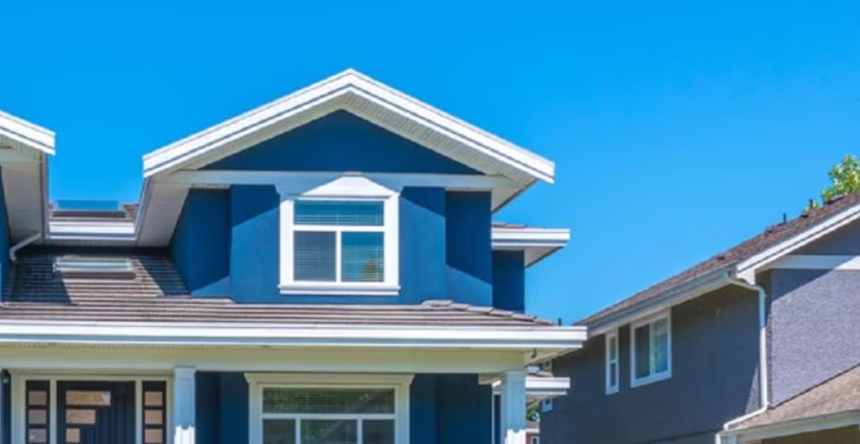
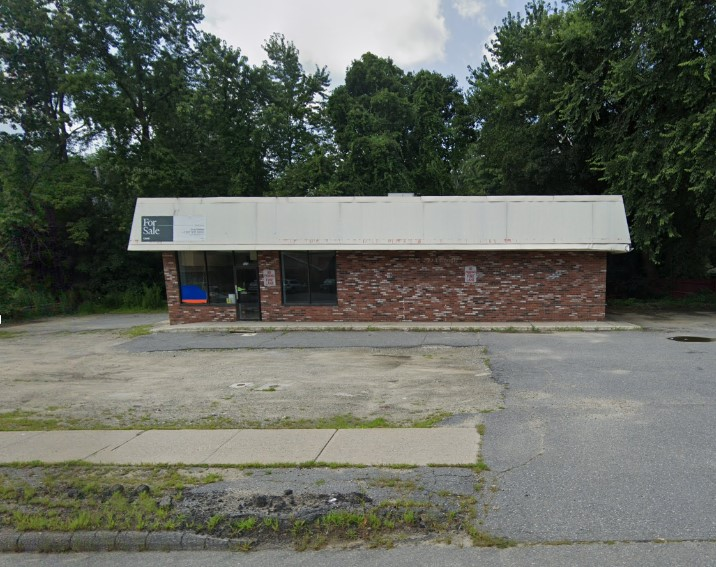
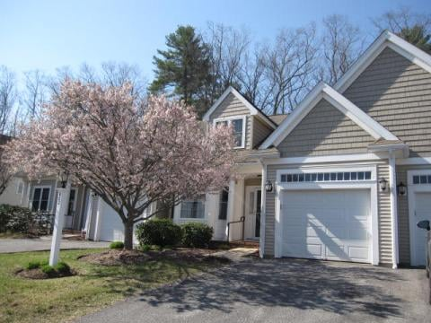

This dashboard was created by CommunityScale for the Town of Lancaster with support from the Department of Community Development and Planning and the Affordable Housing Trust. The objective of this dashboard is to outline the plan's objectives and priorities, share key observations and findings about the local housing landscape, and highlight recommended strategies to increase housing production and address affordability challenges.
By state statute MGL Chapter 40B, cities and towns are required to provide more than 10% of their total year-round housing units as deed-restricted Affordable Housing. Affordable Housing is deed-restricted housing that eligible low- and moderate-income residents can afford by paying no more than 30% of their annual household income. Lancaster has 3,053 housing units, per the 2022 Census ACS 5-Year estimate, of which 170 (or about 5.6%) are deed-restricted Affordable Housing units on the state’s Subsidized Housing Inventory (SHI).
This website version of the plan highlights key observations and findings. The Housing Production Plan is also available in a detailed and downloadable PDF format:
A draft of this report was presented at a public workshop on July 24, 2024. A video of this presentation is available here.
🏡
💰
🏘️
♿
🌱
This production target combines demand driven by net household growth as well as other factors detailed at right which also contribute to maintaining a suitable housing supply over time.
| Units | Factor | Market adjustment | ||
|---|---|---|---|---|
| 210 | 🏘️ | Household growth | Forecasted from 2024 to 2029 | |
| 0 | 👥 | Overcrowding adjustment | Local rate of 1.9% is below than the national average of 3.4% | |
| 8 | 🔨 | Replacement housing | 0.05% of the housing stock is replaced annually | |
| 77 | 🔑 | Vacancy adjustment | Local rate of 2.4% is below the healthy market minimum of 5% | |
| 0 | 🏚️ | Substandard adjustment | Local rate of 0.0% is below the national average of 0.4% | |
| 295 | 📊 | Total units needed | ||
The Town should amend its Inclusionary Zoning bylaw to create an option for deeper affordability at 60% AMI immediately after achieving Safe Harbor status. Specifically, the Town should introduce a provision allowing developers to provide fewer total affordable units if those units are restricted to households earning 60% of Area Median Income (AMI) or less.
To implement this strategy, the Town should maintain the existing inclusionary zoning requirements as a baseline while adding the new option. The amendment should carefully calibrate the reduction in total required units to ensure it provides a meaningful incentive for developers while still producing an adequate number of deeply affordable units.
This approach can address the needs of Lancaster's most housing cost-burdened residents while still encouraging overall affordable housing production. This strategy also provides developers with more flexibility in meeting inclusionary zoning requirements.

The Town should rezone the area of South Lancaster near the Railroad Bridge to create a mixed-use walkable district. The Town should amend the zoning map to designate this target area as a mixed-use district that facilitates the development of cost-effective and efficient housing while incorporating commercial uses on the ground floor of buildings.
To implement this strategy, the Town should develop new zoning regulations that allow for higher density residential development, require or incentivize ground-floor commercial uses, establish design standards promoting walkability, and reduce parking requirements. These regulations should include provisions to encourage a mix of housing types and affordability levels, while ensuring that cost-effective construction methods are permitted to promote housing affordability.
This approach can create a vibrant, mixed-use area in South Lancaster that provides both housing options and commercial amenities in a pedestrian-friendly setting. By encouraging a diverse mix of uses and housing types, the Town can address its housing needs while fostering a dynamic and walkable neighborhood.

The Town should capitalize the Lancaster Affordable Housing Trust (LAHT) through a variety of funding sources. This strategy aims to ensure a stable and robust financial foundation for the Trust, enabling it to effectively pursue its affordable housing initiatives.
Potential funding mechanisms include adjusting upwards the Fee-In-Lieu of providing inclusionary zoning units; sale of public surplus properties; and one time revenues such as Free Cash that is unspent at the end of the fiscal year.
By implementing this multi-faceted funding approach, the Town can strengthen the LAHT's capacity to support affordable housing development, preservation, and programs. This strategy aligns with the overall goal of increasing affordable housing options in Lancaster and provides the Trust with the financial tools necessary to address the community's housing needs effectively.

The Town should consider a gradual increase in Lancaster's Community Preservation Act (CPA) rate from 1% to 2% over the next five years to generate additional funding for affordable housing initiatives.
However, recognizing that Lancaster's tax base is predominantly residential, this increase could significantly impact the overall cost of living for residents. To address this concern, the Town should make the CPA rate increase contingent upon expanding the town's commercial and industrial tax base as outlined in Lancaster’s Master Plan fiscal strategy. This will diversify revenue sources and reduce the burden on residential taxpayers. The proposed CPA increase would maintain current exemptions for income-eligible residents, ensuring it doesn't adversely affect those most vulnerable to rising living costs.
Looking ahead, if Lancaster successfully expands its commercial and industrial sectors, the plan proposes considering a further increase in the CPA rate to the maximum of 3%. This balanced approach seeks to address affordable housing needs while promoting sustainable economic growth and considering the financial well-being of Lancaster residents.
The Town should leverage its land assets to advance affordable housing goals. Specifically, the Town should identify municipally-owned parcels that are suitable for residential development, with a focus on locations within walking distance of essential amenities and services. Examples for potential affordable housing development include the 4 developable acres at the Kilbourne Road site.
To implement this strategy, the Town should issue Requests for Proposals (RFPs) for the development of these parcels. These RFPs should be structured to align with Lancaster's affordable housing objectives, potentially specifying requirements for the number of affordable units, target income levels, and other community benefits. By offering town-owned land for development, Lancaster can reduce land acquisition costs for affordable housing projects, making them more financially feasible and thereby indirectly finance housing that might not otherwise be feasible.
This approach can be an effective way to increase the town's affordable housing stock without requiring direct financial investment from the municipality. It also allows the Town to maintain a degree of control over the development process.
The Town should expand public utility capacity on Main Street to accommodate more housing development. Specifically, the Town should address the current constraints on water and sewer capacity that are limiting housing growth in this area.
This approach can effectively remove a significant barrier to housing development in a key area of Lancaster. By proactively addressing infrastructure limitations, the Town can encourage developers to pursue housing projects that align with community goals. Additionally, improved utility capacity can benefit existing residents and businesses.
The Town should ensure that housing achieving Lancaster's goals is included in the redevelopment programs for both the Former Atlantic Union College and DCAMM property. Specifically, the Town should actively influence the development process for these key sites to incorporate housing that aligns with community objectives.
To implement this strategy, the Town should engage proactively with the owners and potential developers of these sites. This engagement should involve clearly communicating Lancaster's housing goals and priorities, potentially through design guidelines, zoning overlays, or development agreements. The Town should also consider offering incentives or beneficial permitting processes for projects that meet or exceed affordable housing targets.
This approach can leverage significant redevelopment opportunities to address Lancaster's housing needs. By guiding the development of these large properties, the Town can ensure that new housing contributes to affordability.
Lancaster Community Development & Planning is responsible for coordinating and directing all community development planning activities in the Town.
CommunityScale is a pioneering urban planning and spatial data analysis company serving clients across the United States. Follow CommunityScale on LinkedIn and Twitter/X. This dashboard is open source MIT license.